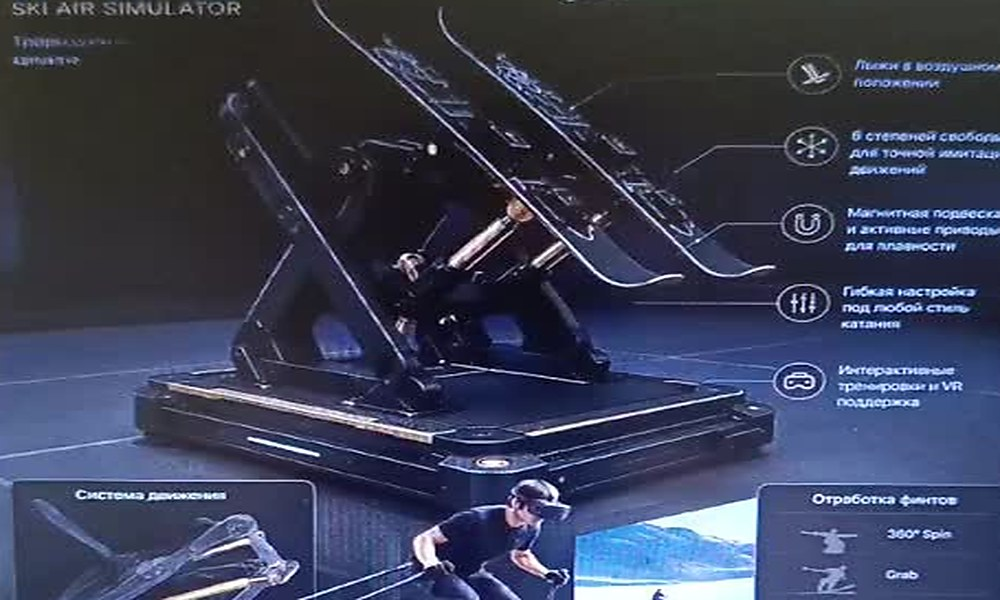
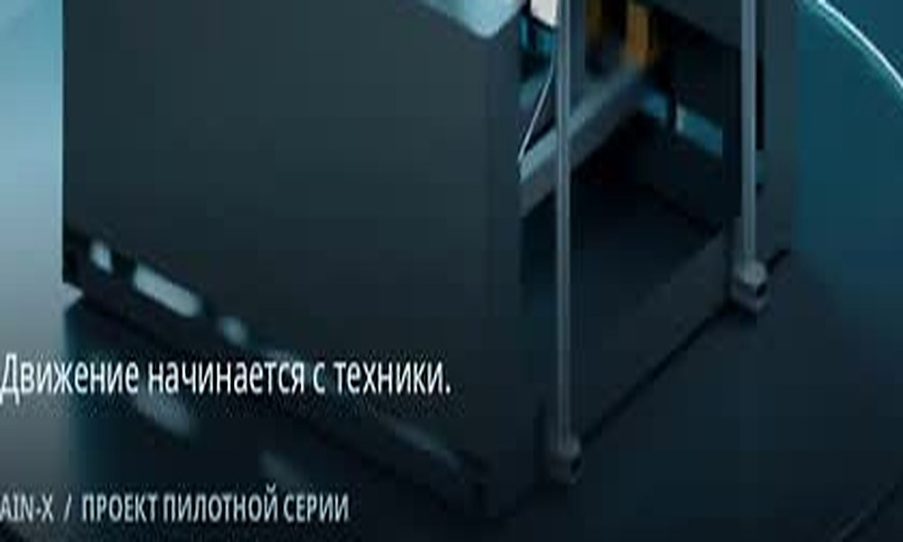

TRAIN-X
TRAIN-X
Иллюстрация спортивной среды
01 / SKI
Горные лыжи
Две отдельные рабочие платформы. Концепция предусматривает независимое движение опор для разработки упражнений с инструктором.
Train-X — проект универсального горнолыжного и сноубордического тренажёра. Одна система, два стиля катания и идея круглогодичных занятий.
Стадия разработки · Физический прототип ещё не изготовленДемонстрация двух стилей катания
Открыть интерактивную модельЦифровая демонстрация концепции, не запись испытаний готового изделия.
Рассмотрите одну конструкцию в лыжной и сноубордической конфигурациях. Вращайте модель, меняйте ракурс и наблюдайте за движением.

Две отдельные рабочие платформы. Концепция предусматривает независимое движение опор для разработки упражнений с инструктором.

Единая сменная платформа для демонстрации боковых движений и наклона. Окончательные параметры определяются испытаниями.
Предлагаем совместно проверить коммерческий потенциал нового формата занятий — до решения о масштабировании.

Проверить спрос на специализированные занятия и дополнительную услугу для клиентов.
Разработать форматы подготовки к сезону и занятий вне склона.

Исследовать новый формат спортивной активности сотрудников и мероприятий.
Совместно с инструкторами разработать упражнения и оценить тренировочную пользу после испытаний.
Приглашаем заказчиков, инвесторов и производственные организации к обсуждению создания первого опытного образца.
Участие в формировании требований, согласование комплектации, изготовление и инженерная проверка пилотного образца, оценка формата занятий на площадке.
Запросить предложениеДо начала финансирования согласуем техническое задание, бюджет, сроки, этапы оплаты, критерии приёмки, права и ответственность сторон.
Цена и сроки — по результатам индивидуального согласования.

Основатель и разработчик Train-X
Цель проекта — создать универсальную тренировочную систему для развития горнолыжного спорта и сноубординга вне зависимости от сезона.
Связаться с разработчиком →Проект Train-X представлен в открытом интернете с интерактивной цифровой моделью.
Подготовлена цифровая концепция единой конструкции со сменными лыжным и сноубордическим комплектами.
Открыты к обсуждению первого опытного образца и производственного сотрудничества.
Сейчас предлагается сотрудничество по разработке и изготовлению первого опытного образца, а не продажа серийного изделия.
Подтверждённой цены пока нет. Бюджет и сроки определяются после согласования технического задания.
До занятий с человеком необходимы инженерные расчёты, проверки конструкции и согласование условий эксплуатации.
Подробная документация предоставляется по согласованию с разработчиком и на согласованных условиях конфиденциальности.
Кожевников Николай Сергеевич
Почта: train-x@bk.ru
Telegram: @knyaz1812
Телефон: +7 996 958-91-50
Для обсуждения пилота, инвестиций и производственного партнёрства.